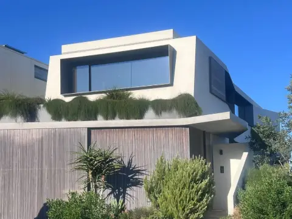
forme curate.materiale sincere. clean forms.honest materials.
Starthouse este un birou de arhitectură și design din Pecica, Arad. Proiectăm case și cabane de munte cu forme simple, lemn, sticlă și beton lăsate să se vadă. Starthouse is an architecture and design office in Pecica, Arad. We design homes and mountain cabins with simple forms, and timber, glass and concrete left in plain sight.
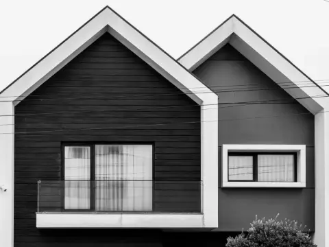
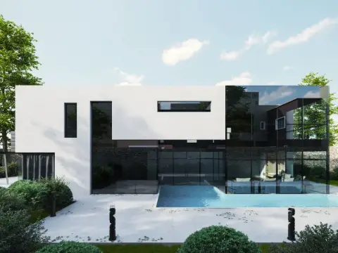
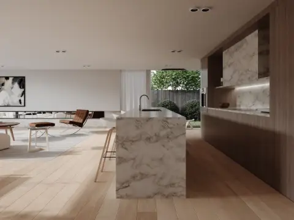
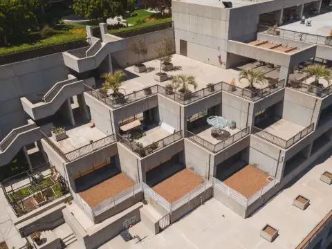
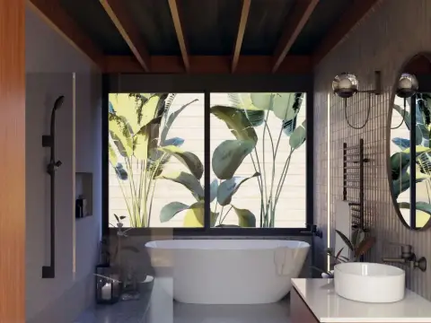
· model și randare demonstrativedemonstration model and render
din planșă pe teren.from drawing to site.
Cabane cu fronton vitrat pe pantă, case cu acoperiș terasă, structuri din lemn care se ridică. Câteva dintre proiectele și șantierele Starthouse.Glass-gabled cabins on a slope, flat-roofed family homes, timber frames going up. A few of Starthouse’s projects and building sites.
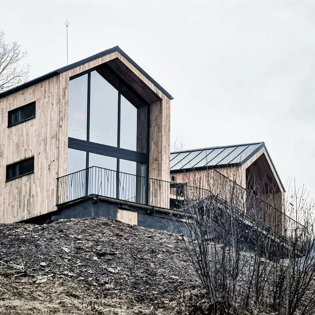
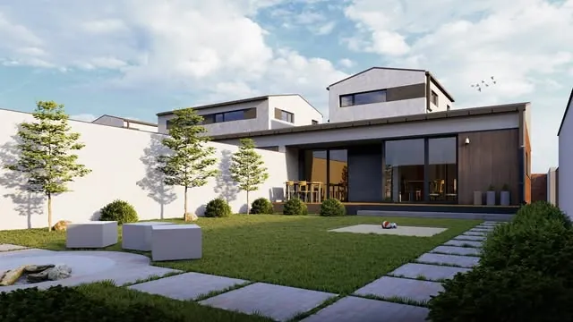
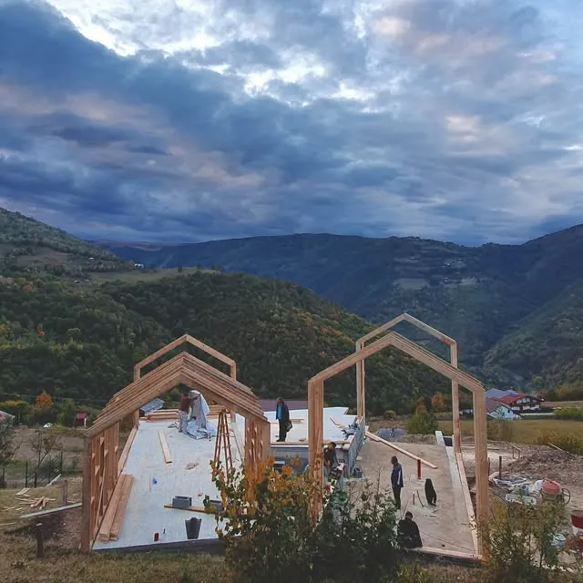
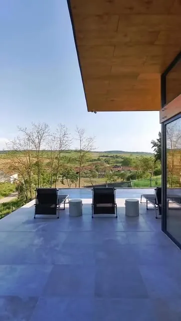
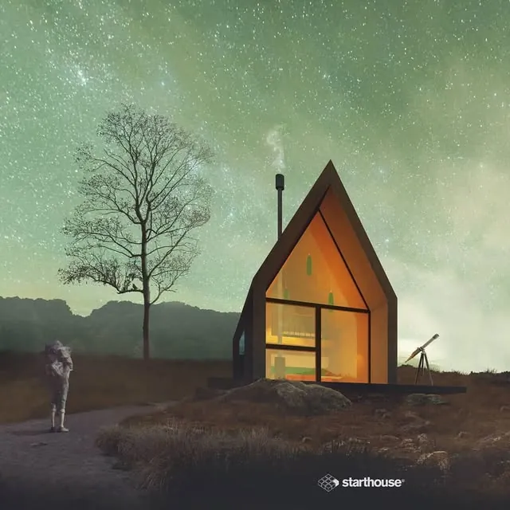
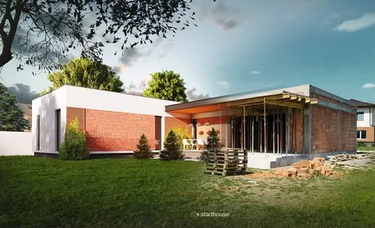
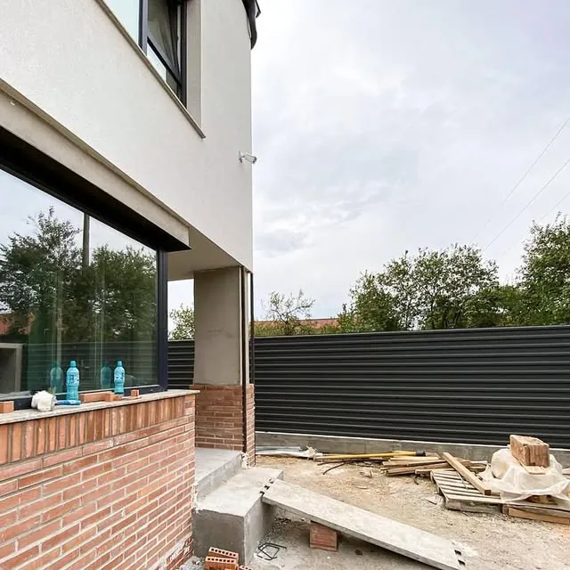
Fotografii din proiectele și de pe șantierele Starthouse. Mai multe, pe Instagram.Photos from Starthouse projects and sites. More on Instagram.
@starthouse_designce facem.what we do.
Arhitectură și design, de la primul drum pe teren până când casa e locuită.Architecture and design, from the first visit to the plot until the house is lived in.
casehomes
Locuințe pentru o familie, gândite pentru terenul, orientarea și bugetul tău.Family homes shaped around your plot, its orientation and your budget.
cabane de muntemountain cabins
Case de vacanță din lemn, făcute pentru pantă, zăpadă și priveliște.Timber holiday homes built for the slope, the snow and the view.
interioareinteriors
Design interior care continuă arhitectura, cu aceleași materiale și aceeași lumină.Interiors that carry the architecture inside, with the same materials and light.
randărirenders
Casa, văzută fotorealist înainte de șantier, ca cabana A-frame de mai sus.The house, shown photo-real before the site opens, like the A-frame cabin above.
pe șantieron site
Rămânem aproape și după ce începe execuția, ca desenul să ajungă întocmai în beton și lemn.We stay close once building starts, so the drawing ends up in concrete and timber exactly as drawn.
cum lucrăm.how we work.
Patru pași, în ordinea în care se construiește o casă.Four steps, in the order a house gets built.
1terenulthe plot
Venim pe teren, ascultăm ce îți dorești și vedem ce permite locul: vecini, pantă, soare, acces.We visit the plot, listen to what you want and read what the place allows: neighbours, slope, sun, access.
2conceptulthe concept
Volume, orientare, lumină. Primele variante le vezi în 3D, nu doar pe hârtie.Volumes, orientation, light. You see the first options in 3D, not only on paper.
3proiectulthe project
Planșele complete, pentru autorizație și pentru constructor, fără loc de interpretări.The full drawing set, for the permit and for the builder, with nothing left to guesswork.
4execuțiathe build
Urmărim șantierul până când randarea devine casă.We follow the site until the render becomes a house.
94%
dintre cei care au lăsat o recenzie pe Facebook recomandă Starthouse.of the people who reviewed Starthouse on Facebook recommend it.13 recenzii pe pagina Starthouse, septembrie 202613 reviews on the Starthouse page, September 2026
hai să începem casa.let’s start the house.
- TelefonPhone0746 478 259
- Emailstarthousecom@gmail.com
- BirouOfficeStr. 211, nr. 9
Pecica, jud. Arad - SocialSocial